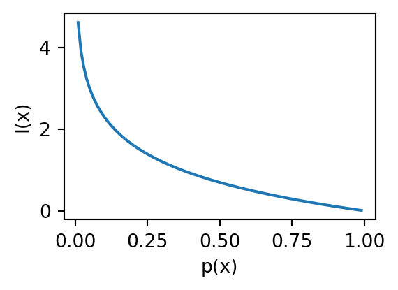
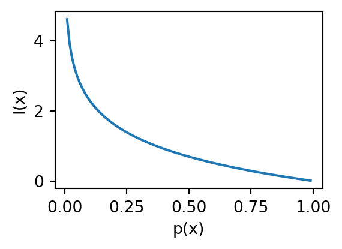

/tmp/ipykernel_1213938/1048902983.py:6: RuntimeWarning:
divide by zero encountered in log

Día 1. Teoría de la información
Las funciones tienen datos de entrada y datos de salida. Entre la entrada y la salida existe una transformación, que es lo que llamamos “función”. La función \(f(x)=y\) se denota por
\[ f\colon X \mapsto Y \]
la función \(f\) mapea valores de \(X\) (input) a \(Y\) (output)
Por ejemplo, la función \(y = 5x + 2\) nos dice que por cada valor de \(x\), \(y\) valdrá 5 veces \(x\) más 2. Si \(x=({\color{red}1}, {\color{blue}2},{\color{green!60!black} 3})\), la función transforma a \(x\) en la colección de valores
\[ y=({\color{red}1*5+2}, {\color{blue}2*5+2},{\color{green!60!black}3*5+2}) \]
En una tabla es más fácil de visualizar
\(\Sigma\) - Suma de \(i\) elementos hasta \(n\), donde \(i\) el índice de sumación
\[ \sum_{i=m}^n x_i=x_1 + x_2 + \dots + x_n \]
Donde \(m\) es el límite inferior de la suma, y \(n\) el límite superior de la suma.
Ejemplo: sumar los valores de \(x\) del 1 al 4
\[\begin{align*} x &= \{{\color{red}1_{[1]}}, {\color{blue}8_{[2]}}, {\color{orange}3_{[3]}}, 5_{[4]} \}\\ \sum_{i=2}^{4} &= {\color{blue}8} + {\color{orange}3} + 5 = 10 \end{align*}\]
En corchete coloco el orden (el índice) del elemento
Un conjunto es una colección de distintos objetos. \(A\) es un subconjunto de \(B\) si todo elemento de \(A\) es también incluido en \(B\), que se simboliza como \(A \subset B\).
El conjunto vacío, denotado \(\emptyset\), es el conjunto que no contiene nada.
Denotamos por \(|S|\) a la cardinalidad (maomeno ) de \(S\). Por ejemplo, \(|\emptyset|=0\).
\(x \in A\) es “\(x\) es un miembro del conjunto \(A\)”. En probabilidad, los eventos se tratan como conjuntos de valores. Si lanzas una moneda 10 veces, el evento “veces que cae águila” es un conjunto de valores.
Si todos los resultados son igualmente posibles, la probabilidad de \(A\)
\[ \Pr_{\textrm{naïve}}(A) = \frac{\textnormal{veces que sale } A}{\textnormal{total de resultados (i.e., } A \cup A^c)} = \frac{|A|}{|S|} \]
Donde por \(|\cdot|\) entendemos la cardinalidad, o el número de elementos.
Existen diferentes interpretaciones de la probabilidad. La más usada, la frecuentista, la define formalmente como el valor límite de \(\Pr(A)\) cuando \(|S|\) tiende a infinito.
Por ejemplo, la probabilidad de obtener caras al lanzar una moneda es el límite de
\[\Pr(caras)=\frac{\#caras}{N}\]
cuando el número de lanzamientos \(N\rightarrow \infty\).
Variable aleatoria: es una función que mapea los resultados de un experimento aleatorio al conjunto de los números reales (comúnmente). Se suele representar con letra mayúscula (e.g., \(X\)).
Existen variables aleatorias discretas (sus valores son finitos o infinitos contables, como \((0, 1, 2, ...)\)), y continuas (sus valores son infinitos no contables).
Espacio muestral: El conjunto de todos los resultados posibles. Se suele representar con \(\Omega\). De este conjunto la \(X\) mapea a los reales: \(X\colon \Omega \rightarrow \mathbb R\). Es decir, a cada elemento de \(\Omega\) asigna un número real, \(X(\omega)\).
Evento: Subconjunto de \(\Omega\), usualmente representado por una vocal mayúscula, e.g., \(A\). Si lanzamos una moneda dos veces, \(\Omega = \{HH,HT,TT,TH\}\). El evento ``la primera moneda cae H’’ es \(A=\{HH,HT\}\).
Algunas propiedades de \(\Pr\) son:
Valor esperado - (a.k.a. media, esperanza, o promedio) es una suma ponderada de los posibles resultados de nuestra variable aleatoria. Matemáticamente, si \(x_1, x_2, x_3, \dots\) son todas distintos posibles valores que \(X\) puede tomar, el valor esperado de \(X\) es
\[\begin{align*} \text{E}[X] & = \sum\limits_i x_i p(X=x_i), \text{ si $x$ es discreta} \\ \text{E}[X] & = \int_{\mathbb R} xf(x)dx, \text{ si $x$ es continua} \end{align*}\]
La multiplicación \(x_ip(X=x_i)\) es el valor de \(x_i\) por la probabilidad de que \(x_i\) ocurra.
Por brevedad, podemos simplemente escribir \(p(x_i)\) para el caso discreto. Para el caso continuo, \(f(x)\) denota la función de densidad de probabilidad.
Si tenemos \(n\) datos, todos con la misma probabilidad de ser tomados por \(X\), entonces la esperanza es simplemente la media aritmética:
\(\text{E}[X] = \frac{1}{n}\sum\limits_{i}x_i\)
Con \(p(x_1)=p(x_2)=...=p(x_n)=1/n\). Por ejemplo, si \(X = (1, 5, 9, 10)\), todos con probabilidad \(p(x)=1/4\),
\(\text{E}[X] = \frac{1}{n}\sum\limits_{i}x_i = \frac{1}{4}\times(1 + 5 + 9 + 10)\)
Los logaritmos solo están definidos para los números reales
\[ \log_b(x) = a, \forall x \in\mathbb{R} > 0 \]
Que se lee ``para todos los \(x\) del conjunto \(\mathbb{R}\) mayores que 0”.
Un logaritmo se puede definir como el valor al que hay que elevar la base \(b\) para obtener \(x\).
Por ejemplo, \(\log_2(16)=4\) (‘4 es el logaritmo base 2 de 16’). Por lo tanto, para obtener 16 de nuevo elevamos 2 a la cuarta, \(2^4=16\).
Propiedad 1 \(log_b (x\times y) = \log_b(x) + \log_b(y)\)
En palabras, esto significa que el logaritmo base \(b\) del producto de dos números es igual a la suma de los logaritmos de esos números.
Propiedad 2 \(\log_b ( \frac{x}{y}) = \log_b(x) - \log_b(y)\)
Esta propiedad es simplemente la operación inversa de la . Esta propiedad permite expresar las razones (o proporciones) en términos de diferencias.
Si, por ejemplo, \(x>y\), el rango de valores que puede tomar \(x/y\) va desde 1 a infinito. Por otro lado, si \(x\leq y\), el rango de valores está entre 0 y 1. Las razones no son funciones simétricas.
Los logaritmos sí. Si \(x>y\), \(\log_b(x/y) > 1\), si \(x<y\), \(\log_b(x/y)<0\). Si \(x=y\), \(\log_b(x/y)=0\). El último resultado implica que \(\log_b(1)=0\)
Propiedad 3 \(\log_b (x^a) = a \log_b (x)\)
Esto se sigue de la . Supongamos que \(a = 3\), entonces \(\log_b (x^a) = \log_b (x^3) = \log_b (x \times x \times x)\), lo que es lo mismo a escribir \(\log_b (x) + \log_b (x) + \log_b (x)\), y dado que \(\log_b (x)\) se repite 3 veces, la expresión \(\log_b (x) + \log_b (x) + \log_b (x)\) es igual a \(3\log_b (x)\).
Propiedad 4 Si \(x < y\), \(\log_b(x) < \log_b(y)\).
En palabras, esto significa que el \(\log_b(x)\) es una función monotónica y estrictamente creciente de \(x\): si \(x\) crece, \(\log_b(x)\) también crece.
Suponiendo que lanzar dos veces una moneda justa son eventos independientes, ¿cuál es la probabilidad de obtener dos caras? Es decir, \(p(x_1=cara \cap x_2 = cara)\). Hint: la probabilidad de una sola cara es \(p(cara)=1/2\).
¿Cuál es la probabilidad \(p(y_1, x_1)\)?
¿Cuál es la probabilidad \(p(y_1)\)?
¿Cuál es la probabilidad \(p(x_1 | y_1)\)?
Usualmente, por información nos referimos coloquialmente a la cantidad de datos que son guardados, enviados, recibidos o manipulados por algún medio.
Otra forma de concebir la información es como reducción de incertidumbre.
Por ejemplo, antes de leer un libro su contenido es desconocido. En ese sentido, nuestra incertidumbre es alta. La primera vez que lo leemos, esa incertidumbre con respecto al contenido disminuye y, al mismo tiempo, podríamos decir que ganamos información.
La noción de información que necesitamos debe tener dos propiedades deseables:
La única función que satisface esos dos requerimientos es
\[ I(x) = -\log_b(p(x)) = \log_b\frac{1}{p(x)} \]
/tmp/ipykernel_1213938/1048902983.py:6: RuntimeWarning:
divide by zero encountered in log
